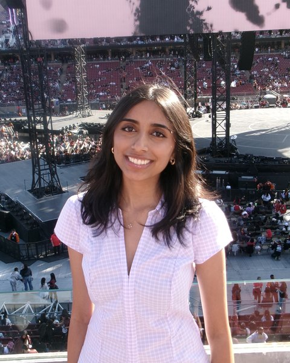

Advika Anand
Co-Founder/President
Hi! I'm a senior at Irvington High School. I love art and creative projects, and helping others matters a lot to me. As part of a BSA troop, I've volunteered on food drives and wildlife clean-ups. CARES combines both of my interests, and I'm excited to see its future impact!